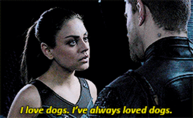
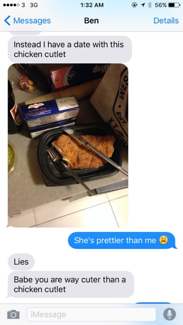
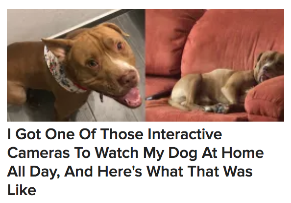
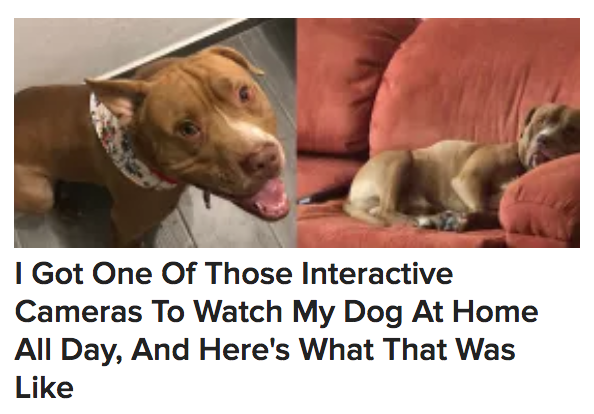

40 Reasons why Ben is the Best Boyfriend Ever
Seriously, he's just the best.
Posted on February 14, 2018
1. Because I said so, and I'm always right.
2. His chest hair is an enchanted forest, home to tiny, magical unicorns that gallop joyfully among the hair-trees.

3. He learned the Seven Words and unleashed the Grand Triskelion, giving him Creation Power.

4. With his Creation Power, Ben composes beautiful love songs and poems for me.
5. Our fusion is stronger than you.

6. Ben is never late or early, he always arrives exactly when he means to. And he arrived in my life at just the right moment.

7. When Ben sings, cute woodland creatures start cleaning our home.
8. He's part Veela, obviously.

9. Ben pulled the sword of Gryffindor out of the Sorting Hat.
10. He uses the sword to help me battle my Republican Horcruxes.
11. When he's not wearing his glasses, Ben can see people's auras.

12. With his magic aura-vision, he can always tell how I'm feeling.

13. When he is wearing his glasses, Ben is actually Clark Kent.

14. Ben is also Super Man. And every other super hero ever.
15. Have you tried his brownies though?

16. Or his brown butter chocolate chip cookies?

17. He has extendable arms that can reach any shelf in the house or grocery store.

18. His arms can also extend to hug a whole town.
19. Lke Atlas, Ben can hold the weight of the world on his gorgeous shoulders.

20. Unlike my glasses, my drivers license, my compact, or my dignity - I'm unlikely to lose Ben at a party.

21. Ben is also part Ent, obviously.
22. His Ent knowledge includes a lot of interesting facts, like the thing about tycoons.

23. He has the heart of Steven Universe.
24. Ben defies gravity.

25. This Snapchat:

26. And this Snapchat:
27. I love dogs. I've always loved dogs.
28. During a race, Ben was propelled into the 7th velocity and became the embodiment of pure love.

29. I once jumped out of a space ship to escape imprisonment and Ben was waiting there with the TARDIS door open to catch me.

30. Ben is the best boyfriend because Rience Priebus sounds like Scooby Doo saying, "Nice penis."
31. Ben can really pull off a Cat in the Hat hat.

32. He thinks I'm cuter than a chicken cutlet.
33. Ben is literally a treasure:

34. Ben's neck is as thick as Gaston's.

35. When I sit on his shoulders, we become Gurren Lagaan and we are unbeatable.

36. He is the sweet to my salty.

37. Even Sakamoto looks up to Ben.

38. Oh you’re still reading this? You’re not convinced yet?

39. How dare you?

40. Okay, one more: Ben is the best boyfriend because, like caffeine, he helps drown out God's voice.
Now Buzzing

 
